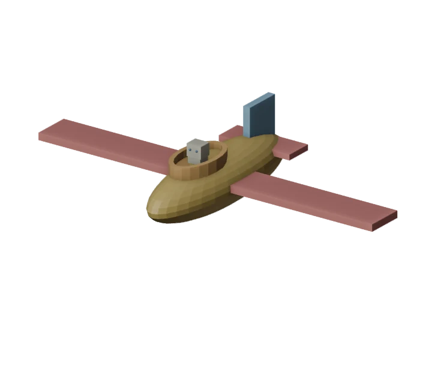
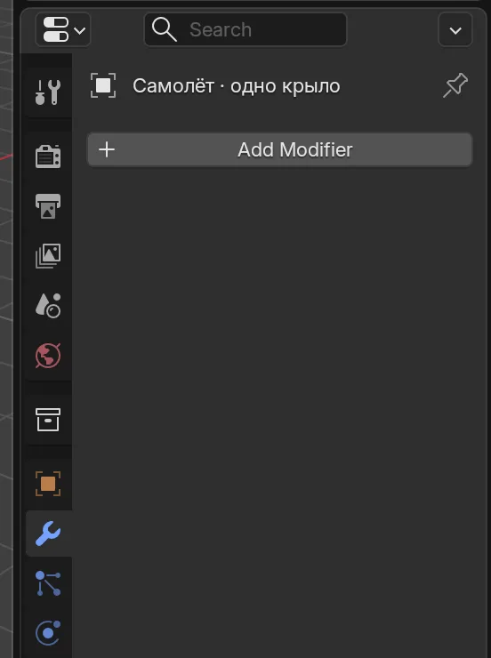
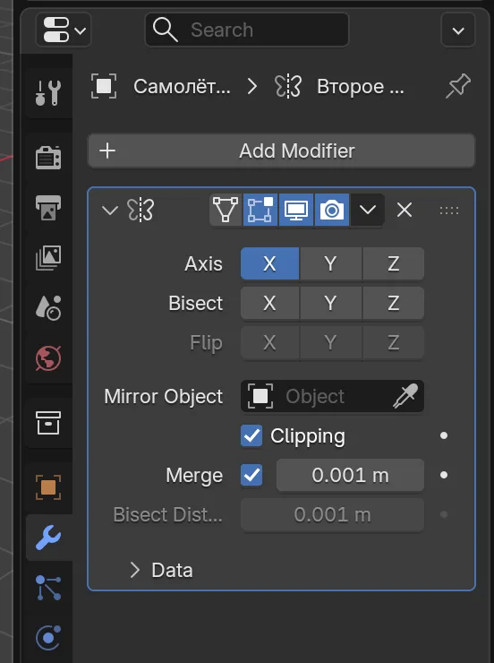
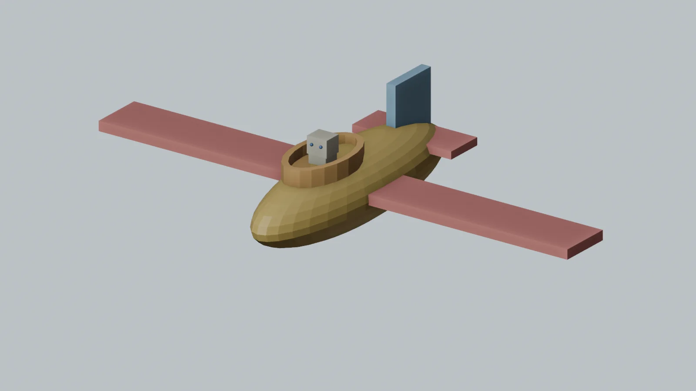
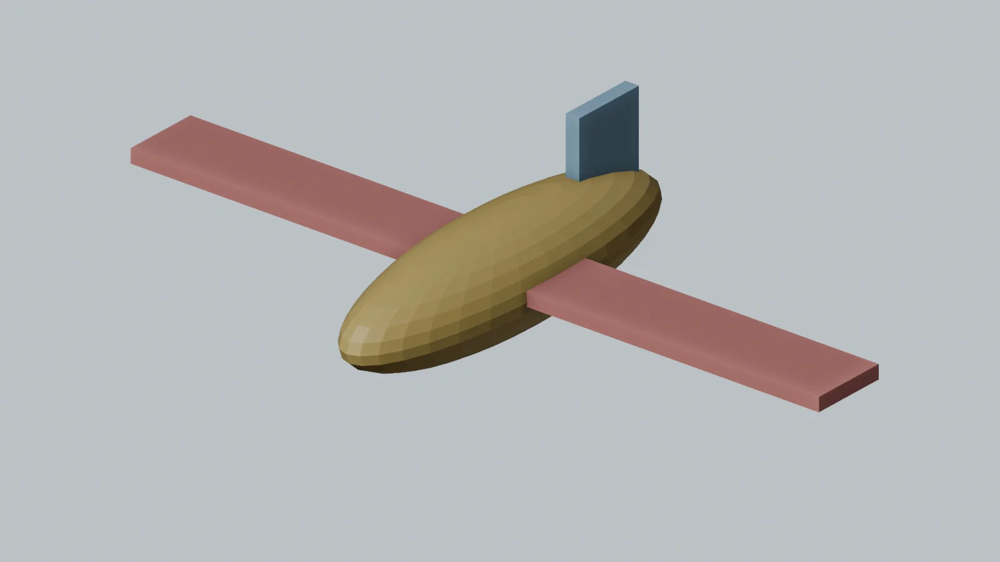
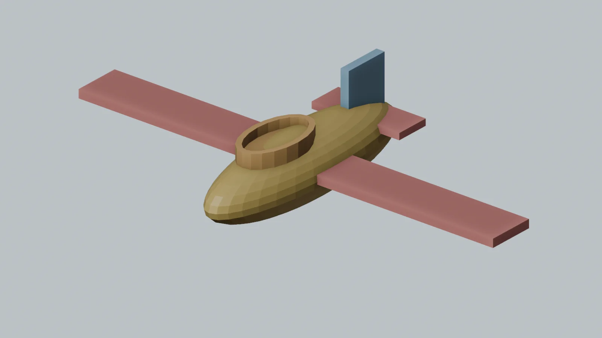

Облачный
самолёт
Одно крыло построишь сам, а Blender покажет его близнеца. Узнаем, как моделировать симметрично — как настоящие 3D-художники!

Одно крыло — два крыла
Симметрия означает, что справа и слева части похожи, как в зеркале. В Blender модификатор Mirror показывает отражение построенного крыла. Поменяешь своё крыло — отражение изменится вместе с ним. Оно остаётся редактируемым: кнопку Apply нажимать не нужно.
Проверь глазами: покажи исходное крыло и его отражение. Что случится со вторым, если удлинить первое?
Корпус для путешествия
Начнём с шара. Ты уже умеешь менять размер и место предмета — теперь сделай длинный корпус.

Это пока только корпус
Крылья появятся позже. Сегодня не нужны точные размеры.
Освободи сцену и добавь шар
В новой сцене выбери стартовый куб, нажми X и подтверди удаление. Открой Add → Mesh → UV Sphere. Если удалять куб не хочется, взрослый может начать новую пустую сцену.
Покажи мне: длинный корпус
Подсказки из Blender 5.2. Нажми на картинку, чтобы рассмотреть её крупнее. Твоя модель может выглядеть иначе.
Длинный корпус из шара
В новой сцене удали стартовый куб, добавь UV Sphere, растяни её вдоль зелёной линии Y через S, Y и подними через G, Z. Нос самолёта смотрит к тебе.
Проверь: Получилась длинная форма; она пока ещё не похожа на весь самолёт.
Растяни и подними
Выбери шар. Нажми S, потом Y и потяни мышь: он станет длинным спереди назад. Щёлкни. Затем G, Z подними его над сеткой. Можешь назвать переднюю часть носом, а заднюю хвостом.
Покажи мне: где нос и хвост
Подсказки из Blender 5.2. Нажми на картинку, чтобы рассмотреть её крупнее. Твоя модель может выглядеть иначе.
Длинный корпус из шара
В новой сцене удали стартовый куб, добавь UV Sphere, растяни её вдоль зелёной линии Y через S, Y и подними через G, Z. Нос самолёта смотрит к тебе.
Проверь: Получилась длинная форма; она пока ещё не похожа на весь самолёт.
Что у меня получилось
Сделай одно крыло
В прошлой неделе ты менял выбранную грань. Теперь в Edit Mode передвинем всю форму нового куба, а его центр останется посередине.

Крыло пока одно
Оранжевая точка в центре — важная подсказка для будущего зеркала.
Добавь куб точно в центр
Убедись, что круглый 3D-курсор остался в центре сетки. В Object Mode выбери Add → Mesh → Cube. Новый куб появится в центре, даже если шар корпуса находится выше.
Покажи мне: куб в центре
Подсказки из Blender 5.2. Нажми на картинку, чтобы рассмотреть её крупнее. Твоя модель может выглядеть иначе.
Новое крыло начинается с куба

Проверь, что 3D-курсор остался в центре сетки. В Object Mode добавь куб. Оранжевая точка — его центр, место будущего зеркала.
Проверь: Куб находится в центре. Не передвигай весь предмет в Object Mode.
Сделай плоскую пластинку
Не двигай весь куб. Наведи мышь на большое окно и нажми Tab, чтобы войти в Edit Mode. Нажми A (выбрать всё). Сделай куб длинным поперёк самолёта через S, X, узким через S, Y и тонким через S, Z. Взрослый может помогать с двумя последними действиями.
Покажи мне: форма крыла
Подсказки из Blender 5.2. Нажми на картинку, чтобы рассмотреть её крупнее. Твоя модель может выглядеть иначе.
Форму куба меняем в Edit Mode

Нажми Tab, затем A, чтобы выбрать весь куб. Растяни его вдоль красной X через S, X; сделай узким через S, Y и плоским через S, Z. В этой миссии взрослый может помогать с клавишами.
Проверь: Куб стал длинной тонкой пластинкой для одного крыла.
Передвинь форму, оставив центр
Пока ты ещё в Edit Mode, нажми G, X и отведи пластинку вправо от центра. Через G, Z подними её к корпусу. Пусть внутренний конец немного заходит под корпус. Нажми Tab для Object Mode. Оранжевую точку не двигай: она остаётся посередине.
Покажи мне: одно крыло и центр
Подсказки из Blender 5.2. Нажми на картинку, чтобы рассмотреть её крупнее. Твоя модель может выглядеть иначе.
Одно крыло справа от середины
Оставаясь в Edit Mode, передвинь выбранную форму через G, X в одну сторону и G, Z вверх к корпусу. Затем Tab вернёт Object Mode. Оранжевая точка остаётся в центре сетки.
Проверь: Есть одно крыло сбоку, а точка предмета осталась посередине.
Покажи: где крыло, а где его оранжевая точка? Почему они теперь не в одном месте?
Что у меня получилось
Позови зеркального близнеца
Теперь добавим один новый инструмент. Он не копирует вручную: Blender всё время показывает отражение твоего крыла.

Найди гаечный ключ
В Object Mode выбери именно крыло. В правой колонке Blender найди значок гаечного ключа — это вкладка Modifiers. Нажми Add Modifier → Generate → Mirror. Если меню трудно найти, взрослый помогает; ребёнок выбирает, когда показать отражение.
Покажи мне: где кнопка и что получилось
Подсказки из Blender 5.2. Нажми на картинку, чтобы рассмотреть её крупнее. Твоя модель может выглядеть иначе.
Гаечный ключ и кнопка Add Modifier

Это настоящая правая панель Blender. Выбери крыло, нажми синий гаечный ключ слева, затем кнопку Add Modifier. В списке выбери Generate → Mirror.
Проверь: Ты нашёл место, где добавляют зеркало для крыла.
Зеркало включено по оси X

После добавления Mirror посмотри на строку Axis: кнопка X должна быть синей. Это красная ось, которая идёт поперёк самолёта.
Проверь: Справа появилась панель зеркала, а у самолёта — второе крыло.
Mirror показал второе крыло
Выбери крыло. Справа открой вкладку с гаечным ключом (Modifiers), нажми Add Modifier → Generate → Mirror. Оставь включённой ось X. Второе крыло появится на другой стороне корпуса.
Проверь: Видны два крыла, хотя ты построил только одно.
Проверь ось X
У Mirror должна быть включена X — красная ось поперёк корпуса. Посмотри на снимок настоящей панели: X синяя. Если второго крыла нет, проверь с взрослым: оранжевая точка крыла должна быть посередине, а сама форма передвинута в Edit Mode.
Покажи мне: ось X и два крыла
Подсказки из Blender 5.2. Нажми на картинку, чтобы рассмотреть её крупнее. Твоя модель может выглядеть иначе.
Зеркало включено по оси X
После добавления Mirror посмотри на строку Axis: кнопка X должна быть синей. Это красная ось, которая идёт поперёк самолёта.
Проверь: Справа появилась панель зеркала, а у самолёта — второе крыло.
Одно крыло справа от середины
Оставаясь в Edit Mode, передвинь выбранную форму через G, X в одну сторону и G, Z вверх к корпусу. Затем Tab вернёт Object Mode. Оранжевая точка остаётся в центре сетки.
Проверь: Есть одно крыло сбоку, а точка предмета осталась посередине.
Mirror показал второе крыло
Выбери крыло. Справа открой вкладку с гаечным ключом (Modifiers), нажми Add Modifier → Generate → Mirror. Оставь включённой ось X. Второе крыло появится на другой стороне корпуса.
Проверь: Видны два крыла, хотя ты построил только одно.
Удлини своё крыло
Нажми Tab, выбери форму крыла через A и удлини её через S, X. Сравни снимки до и после: оба крыла стали длиннее. Если не понравилось, Ctrl+Z. Вернись в Object Mode через Tab.
Покажи мне: одно изменение на обеих сторонах
Подсказки из Blender 5.2. Нажми на картинку, чтобы рассмотреть её крупнее. Твоя модель может выглядеть иначе.
Mirror показал второе крыло
Выбери крыло. Справа открой вкладку с гаечным ключом (Modifiers), нажми Add Modifier → Generate → Mirror. Оставь включённой ось X. Второе крыло появится на другой стороне корпуса.
Проверь: Видны два крыла, хотя ты построил только одно.
Удлини одно крыло — оба станут длиннее

С выбранным крылом нажми Tab, затем A. Удлини своё крыло через S, X. Сравни этот кадр с предыдущим: оба крыла стали заметно длиннее. Ctrl+Z вернёт прежний вариант.
Проверь: Вторая сторона повторяет первую автоматически — это и есть главное открытие недели.


Главный вопрос: сколько крыльев ты построил руками, а сколько появилось благодаря Mirror?
Что у меня получилось
Самолёт для робота-пилота
Сначала добавим настоящий хвост: высокий плавник и маленькие крылья сзади. Потом, если остались силы, повторим Inset и Extrude на низкой овальной форме, чтобы открыть кабину. Можно сделать это во второй день.

Похоже на маленький самолёт
На этом виде спереди и сверху видны длинный нос, две пары крыльев, хвост и пилот.
Сделай хвост самолёта
Убедись, что снова Object Mode. Добавь куб, сделай его тонким и высоким через знакомые S и оси, затем поставь сзади на корпус через G. Добавь ещё один куб: сделай его короткой плоской перекладиной поперёк задней части. Это маленькие задние крылья. Если устал, взрослый может помочь со вторым кубом.
Покажи мне: высокий хвост и маленькие задние крылья
Подсказки из Blender 5.2. Нажми на картинку, чтобы рассмотреть её крупнее. Твоя модель может выглядеть иначе.
Высокий хвост сзади

В Object Mode добавь куб, сделай его тонким и высоким через S, затем поставь на заднюю часть корпуса через G.
Проверь: У самолёта есть вертикальный хвост.
Маленькие крылья на хвосте
Добавь ещё один куб и преврати его в короткую плоскую перекладину через S, X/Y/Z. Поставь поперёк задней части корпуса. Это маленькие задние крылья самолёта.
Проверь: Большие крылья впереди, маленькие сзади — силуэт стал похож на самолёт.
Поставь низкую овальную крышку
В Object Mode выбери Add → Mesh → Cylinder. Уменьши цилиндр через S, растяни немного вдоль зелёной оси Y через S, Y и сильно сплющи через S, Z. Через G поставь его сверху ближе к носу: низ должен спрятаться внутри корпуса. Получится плавная низкая форма вместо высокой коробки.
Покажи мне: низкий овал на корпусе
Подсказки из Blender 5.2. Нажми на картинку, чтобы рассмотреть её крупнее. Твоя модель может выглядеть иначе.
Низкая овальная форма для кабины
В Object Mode выбери Add → Mesh → Cylinder. Уменьши через S, растяни немного вдоль зелёной Y и сплющи сверху вниз через S, Z. Поставь его так, чтобы нижняя часть спряталась в корпусе.
Проверь: Над корпусом видна только невысокая овальная крышка. Это не отдельный большой ящик.
Сделай овальный бортик
Выбери низкий цилиндр и нажми Tab для Edit Mode. Нажми 3 в верхнем ряду клавиатуры для выбора граней, затем Alt+A, чтобы снять выделение. Щёлкни по верхней овальной грани. Нажми I, чуть потяни к середине и щёлкни: получится тонкий бортик. Если верх не видно, поверни вид мышью.
Покажи мне: рамка на верхнем овале
Подсказки из Blender 5.2. Нажми на картинку, чтобы рассмотреть её крупнее. Твоя модель может выглядеть иначе.
Низкая овальная форма для кабины
В Object Mode выбери Add → Mesh → Cylinder. Уменьши через S, растяни немного вдоль зелёной Y и сплющи сверху вниз через S, Z. Поставь его так, чтобы нижняя часть спряталась в корпусе.
Проверь: Над корпусом видна только невысокая овальная крышка. Это не отдельный большой ящик.
I делает рамку на верхней грани
Tab → Edit Mode. Нажми 3 в верхнем ряду для выбора граней, Alt+A для снятия выделения и щёлкни по верхнему овалу. Нажми I, немного потяни внутрь и щёлкни.
Проверь: Внутри овала появилась тонкая рамка — будущий бортик кабины.
Опусти середину внутрь
Внутренняя грань остаётся выбранной. Нажми E и опусти её совсем немного вниз. Остановись до дна, щёлкни, затем Tab вернёт Object Mode. Получится неглубокая открытая кабина — тот же Inset и Extrude, которыми ты уже пользовался. Взрослый может помочь с выбором грани.
Покажи мне: овальная кабина открылась
Подсказки из Blender 5.2. Нажми на картинку, чтобы рассмотреть её крупнее. Твоя модель может выглядеть иначе.
I делает рамку на верхней грани
Tab → Edit Mode. Нажми 3 в верхнем ряду для выбора граней, Alt+A для снятия выделения и щёлкни по верхнему овалу. Нажми I, немного потяни внутрь и щёлкни.
Проверь: Внутри овала появилась тонкая рамка — будущий бортик кабины.
E опускает середину внутрь

Внутренняя грань осталась выбранной. Нажми E и опусти её немного вниз, не проходя сквозь дно низкого цилиндра. Щёлкни для подтверждения, затем Tab вернёт Object Mode.
Проверь: В корпусе видна неглубокая открытая кабина для пилота.
Посади робота-пилота
В Object Mode добавь два маленьких куба: тело внутри кабины и голову чуть выше бортика. Уменьшай каждый через S, двигай через G. Это как робот из первой недели! Если хочется, добавь два крошечных глаза из сфер и придумай пилоту имя.
Покажи мне: робот в кабине
Подсказки из Blender 5.2. Нажми на картинку, чтобы рассмотреть её крупнее. Твоя модель может выглядеть иначе.
E опускает середину внутрь
Внутренняя грань осталась выбранной. Нажми E и опусти её немного вниз, не проходя сквозь дно низкого цилиндра. Щёлкни для подтверждения, затем Tab вернёт Object Mode.
Проверь: В корпусе видна неглубокая открытая кабина для пилота.
Пилот похож на маленького робота
В Object Mode добавь маленький куб для тела и ещё один для головы. Поставь их внутри кабины и над ней. Две крошечные сферы-глаза — необязательная игра.
Проверь: Пилот смотрит вперёд из открытой кабины.
Проверь и сохрани
Поверни вид, чтобы увидеть оба крыла. Покажи исходную и зеркальную стороны. Вместе со взрослым выбери File → Save As и сохрани plane.blend в знакомой папке. Если файл уже есть, подойдёт File → Save.
Покажи мне: готовый самолёт
Подсказки из Blender 5.2. Нажми на картинку, чтобы рассмотреть её крупнее. Твоя модель может выглядеть иначе.


Хватит на сегодня? После хвоста можно сохранить самолёт и вернуться к кабине и пилоту завтра. Mirror — главное открытие этой недели.
Что у меня получилось
Ура, взлетаем!
Теперь ты умеешь делать симметричные детали: моделируешь одну сторону, а Blender помогает со второй. Где ещё пригодится такое зеркало — у робота, бабочки или космического корабля?
Для взрослых: подготовка и помощь
Неделя 5 добавляет одно профессиональное понятие — неразрушающую симметрию. Первые две миссии повторяют знакомые формы и постепенно готовят одно крыло. Третья показывает Mirror и связь между исходной и отражённой стороной. Четвёртая добавляет две простые детали хвоста, затем возвращает Inset и Extrude из прошлой недели для открытой кабины и кубики робота из первой недели для пилота. Кабина — творческое продолжение: после хвоста ребёнок может сохранить файл и вернуться к ней в другой день. В 6–7 лет взрослый может нажимать клавиши и открывать вкладку Modifiers; ребёнок выбирает форму и объясняет, что поменялось.
Перед началом
- Откройте Blender 5.2 LTS в Layout и новую сцену. Оставьте 3D-курсор в центре координат. Если он случайно сместился, Shift+S → Cursor to World Origin. Корпус создаётся из шара, а новое крыло — из отдельного куба в центре.
- Для Mirror критично сохранить origin крыла в центре. Добавьте куб там, войдите в Edit Mode и передвигайте геометрию крыла, а не весь объект в Object Mode. Mirror по X отражает меш относительно origin. На странице это показано после каждого нового действия. Справка Blender о Mirror — только для взрослого.
- Кадры моделей и обрезанные снимки настоящей панели сделаны в отдельной учебной сцене Blender 5.2.2. Палитра различает детали; добавлять материалы ребёнку не нужно. Раскройте подсказку и сравните кадр со своим экраном. Кабина начинается с низкого цилиндра, нижняя часть которого спрятана в корпусе. Выберите его верхнюю грань, сделайте тонкий бортик через I и неглубокое углубление через E. Не нужно копировать масштаб или цвет кадров точно.
- Не требуйте идеальных крыльев, Apply или реальной аэродинамики. Если клавиш слишком много, взрослый ведёт мышь, ребёнок выбирает длину крыла, замечает отражение и придумывает пилота.
Что считать успехом
Ребёнок показывает корпус, исходное крыло и отражение, замечает, что изменение одного крыла влияет на второе, и сохраняет .blend. Кабина и пилот помогают повторить прошлые навыки, но не заменяют открытие симметрии.